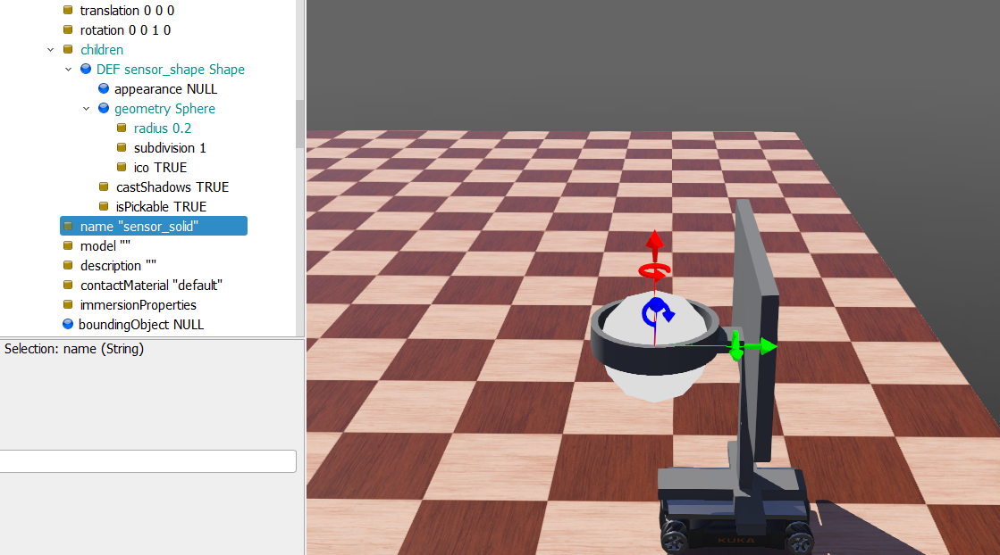
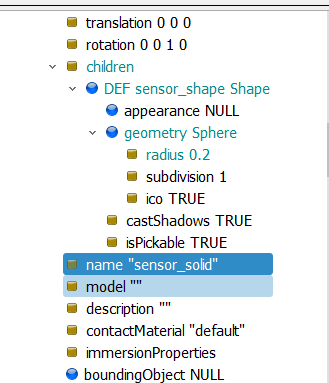
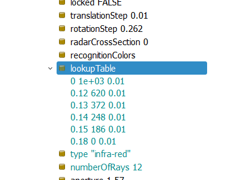
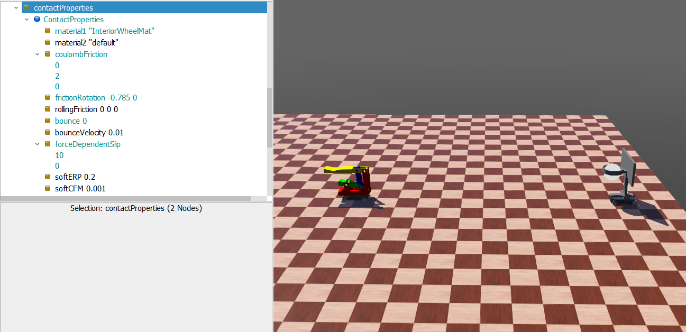
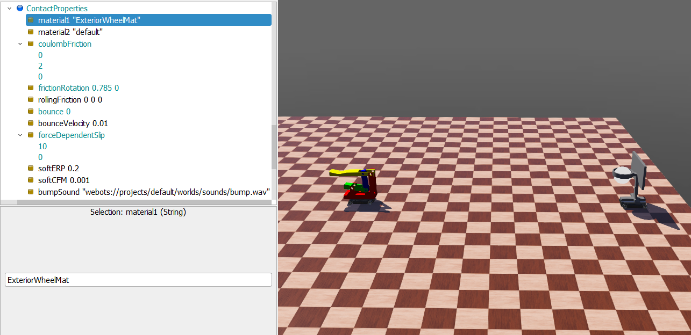
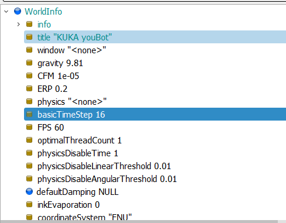

Final <<
Previous Next >> Brython
info

在老師的範本中，是將sensor以圓球形置於球框，並且radius設0.2

接著是sensor的很重要的一環，lookup table是用來告訴 Webots 模擬器：感測器讀到的值要怎麼對應成實際回傳的數值。
如圖中
1.距離是 0 公尺時，感測器回傳 1000，有1%雜訊
2.距離是0.12公尺時，感測器回傳620，有1%雜訊
依此類推
而下方的type是sensor射線型態，主要是對紅色物體敏感、不會畫出紅點、會忽略透明物體

Center of Mass是質心，如果質心太高或偏一邊，在移動或受到力量時，就更容易翻倒
Inertia Matrix慣性矩陣簡單解釋：
它是一個 3x3 的矩陣（數學上叫「張量」），裡面包含了物體繞 x、y、z 三個方向旋轉時的轉動慣量
如果你是圓盤或輪子那種簡單形狀，就只要一個值；但對於複雜 3D 形狀，就需要整個矩陣來描述
| Ixx 0 0 |
| 0 Iyy 0 |
| 0 0 Izz |
其中：
Ixx 是繞 x 軸的轉動慣量
Iyy 是繞 y 軸的
Izz 是繞 z 軸的
而這數值投球機跟球框是一樣的，因為他們用的youbot是一樣的，輪子就是一樣的

在worldinfo中設置了兩個ContactProperties，其中改動的參數有
coulombFriction：滑動摩擦係數-->值越高，越不容易滑動
frictionRotation：旋轉摩擦（抗扭轉）-->值越高，越難在原地旋轉或扭轉
forceDependentSlip：依據力量產生的滑動-->越高：力量大時滑越多
Bounce：彈跳 / 回彈係數-->值越高，能量損失越少，越好彈回

basicTimeStep可以決定每一步模擬代表的「模擬時間長度」，單位是毫秒（ms）。
就是用來更新所有物理量變化的間隔，所以越小越精細
1.
DEF youBot_stand Robot {
translation 6.23 -0.12 0.103
children [
BodyMesh {
}
DEF WHEEL5 InteriorWheel {
translation 0.228 -0.158 -0.055
anchor 0.228 -0.158 -0.055
name "wheel5"
sensorName "wheel1sensor"
}
DEF WHEEL6 ExteriorWheel {
translation 0.228 0.158 -0.055
anchor 0.228 0.158 -0.055
name "wheel6"
sensorName "wheel2sensor"
}
DEF WHEEL7 ExteriorWheel {
translation -0.228 -0.158 -0.055
anchor -0.228 -0.158 -0.055
name "wheel7"
sensorName "wheel3sensor"
}
DEF WHEEL8 InteriorWheel {
translation -0.228 0.158 -0.055
anchor -0.228 0.158 -0.055
name "wheel8"
sensorName "wheel4sensor"
}
Solid {
translation 0 0 0.03
children [
Pose {
translation -0.3 0 0.61
rotation 0 0 1 -1.57
children [
CadShape {
url [
"../cad/split_parts/basket_stand_small.obj"
]
}
Pose {
children [
DistanceSensor {
children [
DEF sensor_solid Solid {
children [
DEF sensor Shape {
geometry Sphere {
radius 0.2
}
}
]
name "sensor_solid"
}
]
name "sensor"
lookupTable [
0 1000 0.01
0.12 620 0.01
0.13 372 0.01
0.14 248 0.01
0.15 186 0.01
0.18 0 0.01
]
type "infra-red"
numberOfRays 12
}
]
}
]
}
DEF PLATE Shape {
appearance PBRAppearance {
baseColor 0.75 0.75 0.75
}
geometry Box {
size 0.5 0.3 0.02
}
}
]
name "PLATE"
boundingObject USE PLATE
physics Physics {
mass 0.5
}
}
GPS {
}
InertialUnit {
}
Emitter {
name "score_emitter"
channel 1
}
]
name "youBot_stand"
model "KUKA youBot"
description "KUKA youBot - Base with wheels only"
boundingObject Group {
children [
Pose {
translation 0 0 -0.045
children [
Box {
size 0.34 0.34 0.09
}
]
}
Pose {
translation 0 0 -0.045
children [
Box {
size 0.56 0.23 0.09
}
]
}
]
}
physics Physics {
density -1
mass 22
centerOfMass [
0 0 -0.045
]
inertiaMatrix [
0.166204 0.418086 0.55459
0 0 0
]
}
controller "stand_controller"
}
2.
DEF counter_supervisor Robot {
children [
Receiver {
name "score_receiver"
channel 1
}
]
name "counter_supervisor"
controller "counter_supervisor"
supervisor TRUE
以上兩段重要的是emitter及receiver該在的位置
3.
from controller import Robot, Keyboard
# Constants
#TIME_STEP = 32 # Simulation time step in milliseconds
WHEEL_RADIUS = 0.1 # Radius of the wheels in meters (10cm)
L = 0.471 # Half of the robot's length in meters
W = 0.376 # Half of the robot's width in meters
MAX_VELOCITY = 10.0 # Maximum velocity allowed for the wheels
# Initialize the robot
robot = Robot()
# Get simulation time step
timestep = int(robot.getBasicTimeStep())
emitter = robot.getDevice("score_emitter")
score_to_send = 2
# Get the DistanceSensor device
sensor = robot.getDevice('sensor')
sensor.enable(timestep)
score = 0
last_score_time = 0
cooldown = 1.0
# Initialize the keyboard
keyboard = Keyboard()
#keyboard.enable(TIME_STEP)
keyboard.enable(timestep)
# Get motor devices
wheel5 = robot.getDevice("wheel5") # Front-right wheel
wheel6 = robot.getDevice("wheel6") # Front-left wheel
wheel7 = robot.getDevice("wheel7") # Rear-right wheel
wheel8 = robot.getDevice("wheel8") # Rear-left wheel
# Set motors to velocity control mode
for wheel in [wheel5, wheel6, wheel7, wheel8]:
wheel.setPosition(float('inf')) # Enable velocity control
wheel.setVelocity(0) # Set initial velocity to 0
def set_wheel_velocity(v1, v2, v3, v4):
"""Set the velocity of all wheels."""
wheel5.setVelocity(v1)
wheel6.setVelocity(v2)
wheel7.setVelocity(v3)
wheel8.setVelocity(v4)
# lookupTable 轉成程式用的格式
lookup_table = [
(1000, 0.00),
(620, 0.12),
(372, 0.13),
(248, 0.14),
(186, 0.15),
(0, 0.18)
]
def ad_to_distance(ad_value):
# 假設AD值遞減，距離遞增
for i in range(len(lookup_table)-1):
a0, d0 = lookup_table[i]
a1, d1 = lookup_table[i+1]
if a1 <= ad_value <= a0:
# 線性插值
return d0 + (d1 - d0) * (ad_value - a0) / (a1 - a0)
# 超出範圍時回傳極值
if ad_value > lookup_table[0][0]:
return lookup_table[0][1]
return lookup_table[-1][1]
# Main loop
print("Use 'W', 'A', 'S', 'D' keys to control the robot.")
print("W: Move forward, S: Move backward, A: Turn left, D: Turn right.")
print("Press 'Q' to quit.")
#while robot.step(TIME_STEP) != -1:
while robot.step(timestep) != -1:
key = keyboard.getKey() # Read the key pressed
# Read DistanceSensor value
sensor_value = sensor.getValue()
#print(sensor_value)
distance = ad_to_distance(sensor_value)
current_time = robot.getTime()
#print(sensor_value)
# Check if the ball blocks the sensor (you may need to adjust the threshold based on your sensor's range)
if key == ord('J') or key == ord('j'):
print(distance)
if key == ord('K') or key == ord('k'):
print(distance)
if distance < 0.11 and (current_time - last_score_time) > cooldown:
score +=2
print("得分")
print(distance)
emitter.send(str(score_to_send))
if key == ord('S') or key == ord('s'):
# Move forward
velocity = MAX_VELOCITY
set_wheel_velocity(velocity, velocity, velocity, velocity)
elif key == ord('W') or key == ord('w'):
# Move backward
velocity = -MAX_VELOCITY
set_wheel_velocity(velocity, velocity, velocity, velocity)
elif key == ord('D') or key == ord('d'):
# Turn right
velocity = MAX_VELOCITY
set_wheel_velocity(-velocity, velocity, -velocity, velocity)
elif key == ord('A') or key == ord('a'):
# Turn left
velocity = MAX_VELOCITY
set_wheel_velocity(velocity, -velocity, velocity, -velocity)
elif key == ord('Q') or key == ord('q'):
# Quit the program
print("Exiting...")
break
else:
# Stop the wheels when no key is pressed
set_wheel_velocity(0, 0, 0, 0)
4.
from controller import Supervisor
SEGMENTS = [
[1,1,1,1,1,1,0], # 0
[0,1,1,0,0,0,0], # 1
[1,1,0,1,1,0,1], # 2
[1,1,1,1,0,0,1], # 3
[0,1,1,0,0,1,1], # 4
[1,0,1,1,0,1,1], # 5
[1,0,1,1,1,1,1], # 6
[1,1,1,0,0,0,0], # 7
[1,1,1,1,1,1,1], # 8
[1,1,1,1,0,1,1], # 9
]
DIGIT_MATERIALS = [
['a3mat', 'b3mat', 'c3mat', 'd3mat', 'e3mat', 'f3mat', 'g3mat'], # 百
['a2mat', 'b2mat', 'c2mat', 'd2mat', 'e2mat', 'f2mat', 'g2mat'], # 十
['a1mat', 'b1mat', 'c1mat', 'd1mat', 'e1mat', 'f1mat', 'g1mat'], # 個
]
ON_COLOR = [0, 1, 0]
OFF_COLOR = [0.05, 0.05, 0.05]
def set_digit(supervisor, digit_index, value):
segs = SEGMENTS[value]
for i, seg_on in enumerate(segs):
mat_node = supervisor.getFromDef(DIGIT_MATERIALS[digit_index][i])
if mat_node:
mat_node.getField('diffuseColor').setSFColor(ON_COLOR if seg_on else OFF_COLOR)
else:
print(f"找不到 {DIGIT_MATERIALS[digit_index][i]} 這個DEF")
def set_display(supervisor, value):
value = max(0, min(999, int(value)))
h = value // 100
t = (value // 10) % 10
u = value % 10
set_digit(supervisor, 0, h)
set_digit(supervisor, 1, t)
set_digit(supervisor, 2, u)
supervisor = Supervisor()
timestep = int(supervisor.getBasicTimeStep())
score = 0
receiver = supervisor.getDevice("score_receiver")
receiver.enable(timestep)
while supervisor.step(timestep) != -1:
while receiver.getQueueLength() > 0:
data = receiver.getString()
if data.isdigit():
try:
received_score = int(data)
score += received_score
print(f"收到得分訊息: +{received_score}, 總分: {score}")
except Exception as e:
print("訊息格式錯誤:", e)
receiver.nextPacket()
set_display(supervisor, score)
以上兩段重要的連動在於
timestep = int(robot.getBasicTimeStep())
emitter = robot.getDevice("score_emitter")
score_to_send = 2
if distance < 0.11 and (current_time - last_score_time) > cooldown:
score +=2
print("得分")
print(distance)
emitter.send(str(score_to_send))
以及
while supervisor.step(timestep) != -1:
while receiver.getQueueLength() > 0:
data = receiver.getString()
if data.isdigit():
try:
received_score = int(data)
score += received_score
print(f"收到得分訊息: +{received_score}, 總分: {score}")
except Exception as e:
print("訊息格式錯誤:", e)
receiver.nextPacket()
set_display(supervisor, score)
Final <<
Previous Next >> Brython